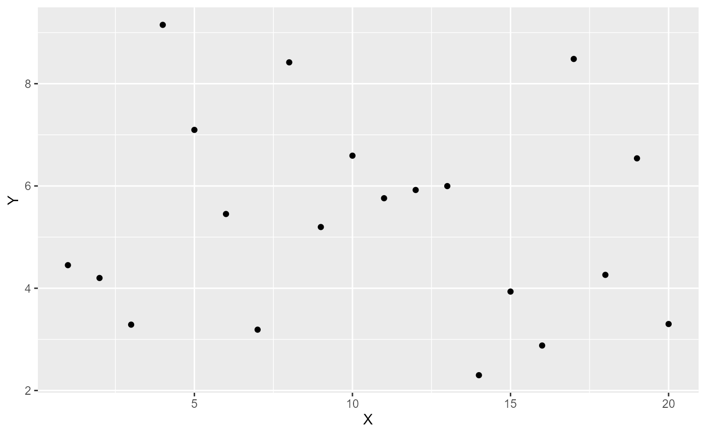
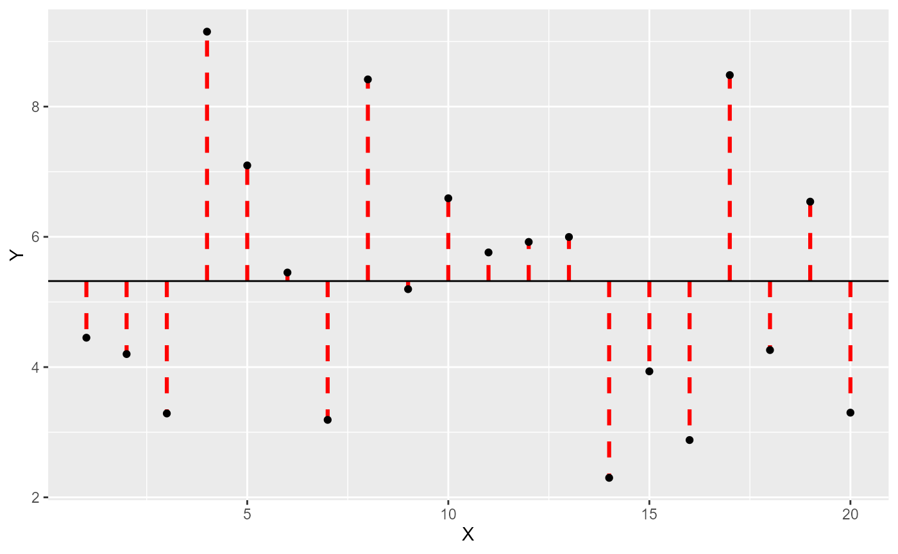
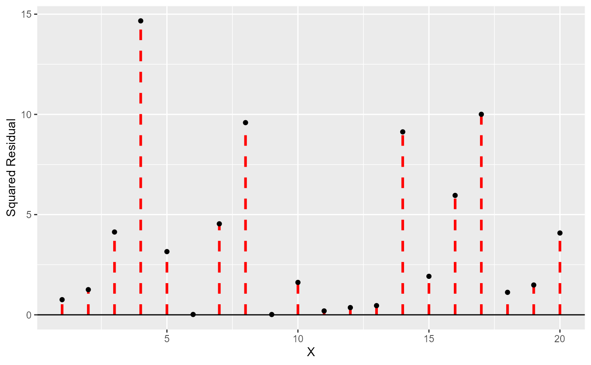

Module3_DescriptiveStatistics
Module3_DescriptiveStatistics.RmdIntroduction
When we collect data we often wish to summarize it in a way that is easy to understand. This is where descriptive statistics come in. Descriptive statistics are used to describe the basic features of the data in a study by providing summaries about the sample and the measures. The reduction of a large data set into a smaller set of summary statistics is a type of abstraction - giving a way to think and compare data without having to look at every single data point.
Descriptive statistics are often the first step in data analysis, providing a foundation for further statistical analysis. They can help identify patterns, trends, and anomalies in the data, and can also inform decisions about how to proceed with further analysis.
Types of Descriptive Statistics
Typically descriptive statistics aim to describe two key features of the data:
- the location - a measure of the most common or likely value if we were to randomly select a data point from the data set.
- the variability - a measure of how spread out the data is, how much the data points differ from each other, or how unlikely you would be to select the location at random.
Measures of Location
There are 4 common measures of location:
The Mean
This statistic is what most call ‘the average’, and is calculated by summing all the values and dividing by the number of values. For example this set of values:
| 1 | 2 | 3 | 4 | 5 |
would have a mean of 3, calculated as follows:
\[ \text{Mean} = \frac{1 + 2+ 3+4+5}{5} = \frac{15}{5} = 3 \]
The mean is said to not be robust as it is highly sensitive to outliers or manipulation of small amounts of the data. For example, if we had corrupted the dataset and miss measured 1 as 100 in the last example, the mean becomes:
\[ \text{Mean}_{Corrupted} = \frac{100 + 2+ 3+4+5}{5} = \frac{114}{5} = 22.8 \]
The Median
The middle value of a sorted set of values. If the number of values is odd, the median is the middle value; if it is even, the median is the average of the two middle values or the interval defined by the two middle values. For example, if we had a set of values:
| 7 | 10 | 6 | 6 | 5 | 8 | 9 | 4 | 5 | 7 |
which when sorted looks like this:
| 4 | 5 | 5 | 6 | 6 | 7 | 7 | 8 | 9 | 10 |
We can see that the 5th value is 6, and the 6th value is 7, so the median is 6.5 or the interval [6, 7].
The median is a robust measure of location, meaning it is less affected by outliers than the mean. For example, if we had corrupted the dataset and miss measured 4 as 1 in the last example:
| 1 | 5 | 5 | 6 | 6 | 7 | 7 | 8 | 9 | 10 |
the median would still be 6.5.
The Mode
The value that appears most frequently in a data set. A data set may have one mode (unimodal), more than one mode (multimodal), or no mode at all. The mode is useful for categorical data where we wish to know which is the most common category. For example, if we had the data:
| a | b | b | c | c | c | c | d | d | e |
the mode is ‘c’ as it appears more than any other value. Alternatively:
| a | a | a | b | c | c | d | e | e | e |
The letters “a” and “e” both appear the most, so the data is bimodal. If “c” appeared one more time, it would be trimodal.
Quantiles
The value(s) that divide a data set into equal-sized intervals. The median is an example of a quantile as it divides the data into two equal sized groups. Common quantiles include quartiles (dividing the data into four equal parts), quintiles (five equal parts), and percentiles (hundred equal parts). For example, with the data:
| 1 | 1 | 1 | 2 | 3 | 3 | 3 | 3 | 4 |
| 5 | 6 | 6 | 7 | 9 | 9 | 9 | 10 |
the 1st quartile is 3 (4 values are less than or equal to 3), the 2nd quartile is 4 (8 values are less than or equal to 4), and the 3rd quartile is 7 (12 values are less than or equal to 7).
Measures of Variability
There are several common measures of variability for numeric data:
Range
The difference between the maximum and minimum values in a data set,
and provides a measure of how spread out the values are.
For example, if we had the data:
| 1 | 1 | 1 | 2 | 3 | 3 | 3 | 3 | 4 |
| 5 | 6 | 6 | 7 | 9 | 9 | 9 | 10 |
The then the maximum is 10 and the minimum is 1, so the range is \(10 - 1 = 9\). The ‘range’ is always positive, and a larger range implies a wider spread of the data.
Interquartile Range (IQR)
In the way the range is the difference in the minimum and maximum, the Interquartile Range is the difference between the 1st and 3rd ‘quartiles’ (quantiles for 4 equal sized groups). For example with the data:
| 1 | 1 | 1 | 2 | 3 | 3 | 3 | 3 | 4 |
| 5 | 6 | 6 | 7 | 9 | 9 | 9 | 10 |
The 1st quartile is 3, and the 3rd quartile is 7, so the IQR is \(7 - 3 = 4\). As with the range, the IQR is always positive, and a larger IQR implies a wider spread of the data.
Variance / Standard Deviation
The variance of a data set is the average of the squared differences from the mean, and provides a measure of how much the values in a data set differ from the mean. The thinking behind using the squared difference is that for a set of data:
#> Warning: package 'ggplot2' was built under R version 4.2.3
there is a certain amount of spread in the data. If we add a horizontal line to represent the ‘mean’:

then each observation has a certain difference from this value (we call
a residual as it’s the part left over). Becuase of how we
calculate the mean, the sum of residuals is zero (the total of
the positive residuals has the same magnitude as the total of the
negative residuals) - but if we square them each negative becomes a
positive (\(2^2 = 4\), \((-2)^2 = 4\) and if it helps you remember,
in mathematics two wrongs do make a right). So each
squared residual has a value:
 and the ‘variance’ is then the mean of these values.
Now - because we squared the residuals, the variance is a measure of the squared spread (e.g. if our measurement was weight in \(kg\) the variance would be in \(kg^2\)). This is not very useful, so we take the square root of the variance to get the standard deviation (SD), which is in the same units as the original data.
The variance and standard deviation are non-negative, and a larger value implies a greater spread around the mean value.
When to use which measure?
Most of these statistics can only apply to ordered variables (e.g. numeric or ordered factors) - so if we are dealing with nominal data, we can only report the mode (if one exists).
When we summarize numeric data we often want to report both the location and variability of the data. For example, if we were to report the mean and standard deviation of a set of values, we would be saying that the most likely value is the mean, and that the values are spread out around this value by the standard deviation. This is a very useful summary of the data, but it does rely on some assumptions about the data.
Commonly people will prioritize reporting the mean and standard deviation, because between them we can fully describe a normal distribution. The normal distribution occurs very often in nature, and is the basis for many statistical tests, so if it is valid to assume the data is normal, these two terms describe the entire data set - a pretty useful feature.
However, if the assumption of normality is not fair (e.g. if the data has outliers, is asymmetric or if steps in the variable aren’t equal) then the mean and standard deviation aren’t accurate and the strengths of the normal distribution don’t apply. When this is the case we use the more robust (they require fewer assumptions) median and IQR to characterize the data.